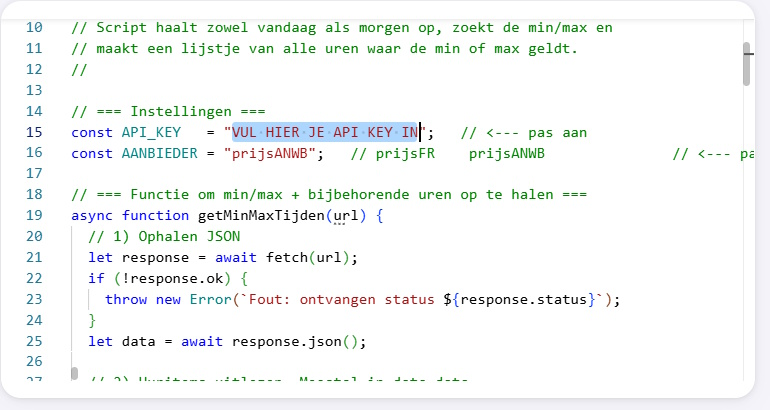
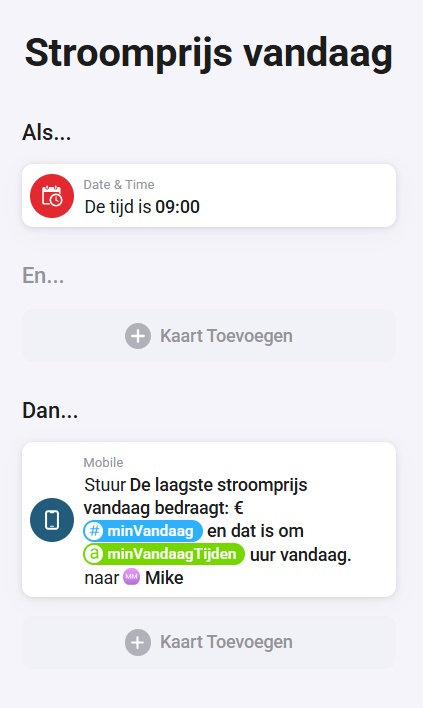
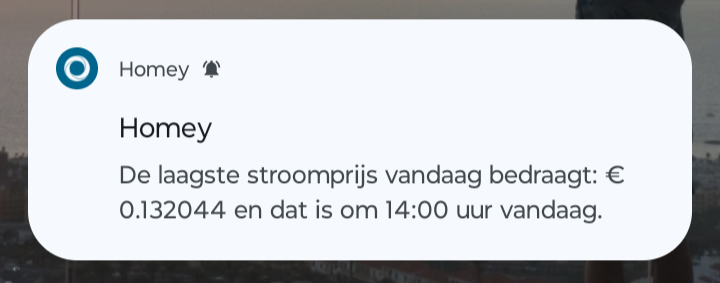
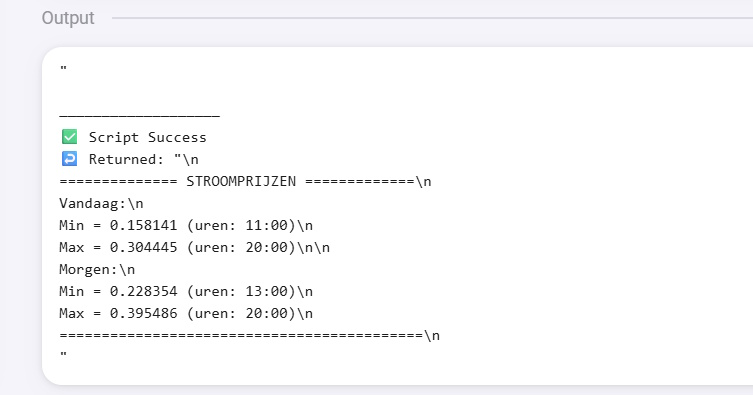

Wie ooit door een app met dynamische stroomprijzen heeft zitten scrollen, kent het wel. Vandaag is stroom goedkoop om 13:00 uur, morgen misschien midden in de nacht, en op een ander moment betaal je juist de hoofdprijs. Leuk om te weten, maar eerlijk is eerlijk: daar wil je natuurlijk niet iedere dag zelf achteraan.
En precies daar wordt het interessant. Want als Homey weet wanneer stroom goedkoop of duur is, kun je daar apparaten op laten reageren. Denk aan je boiler, vaatwasser, wasmachine, laadpaal, thuisaccu of een simpele melding op je telefoon. Niet langer zelf nadenken, maar je huis het rekenwerk laten doen. Dat is voor mij precies waar domotica om draait: verschillende apparaten, diensten en gegevens aan elkaar koppelen zodat je huis slimmer wordt dan een verzameling losse apps.
Van Huis van de Toekomst naar stroomprijs-flow
Vroeger klonk een huis dat zelf beslissingen nam als toekomstmuziek. Inmiddels kun je met een Homey, een API en een klein script al verrassend ver komen. Dit is geen sciencefiction meer, maar gewoon iets wat je vanavond nog kunt bouwen.
Wat gaan we maken?
In deze tutorial maken we een HomeyScript dat de stroomprijzen van vandaag en morgen ophaalt via Enever. Vervolgens zoekt het script per dag de laagste en hoogste prijs, bepaalt het bijbehorende uur en slaat het resultaat op als HomeyScript-tags.
Na het draaien van het script heb je onder andere deze informatie beschikbaar in Homey:
- De laagste stroomprijs van vandaag inclusief het uur waarop die prijs geldt.
- De hoogste stroomprijs van vandaag zodat je juist weet wanneer je beter even niets groots start.
- De laagste en hoogste prijs van morgen zodra deze beschikbaar zijn.
- Tags voor flows en Advanced Flows zodat je de waardes direct kunt gebruiken.
Daarmee bouw je een praktische brug tussen dynamische energieprijzen en slimme sturing in huis. Precies het soort koppeling waardoor een Smart Home pas écht slim begint te worden.
Voor wie is deze tutorial?
Deze tutorial is bedoeld voor Homey-gebruikers met een dynamisch energiecontract, zonnepanelen, een laadpaal, thuisaccu of gewoon een gezonde interesse in besparen. Je hoeft geen doorgewinterde programmeur te zijn, maar het helpt wel wanneer je al eens een HomeyScript hebt geopend en weet hoe je een script vanuit een Flow of Advanced Flow start.
Ben je nog wat nieuw met Homey? Geen probleem. Zie dit script dan vooral als een mooi opstapje. Eerst kopiëren en werkend krijgen, daarna rustig aanpassen aan je eigen huis.
Wat heb je nodig?
- Een werkende Homey-omgeving met HomeyScript.
- Een gratis API-key van Enever.
- Een aanbieder-veld uit de Enever-prijzenfeed, bijvoorbeeld
prijsANWB. - Een Flow of Advanced Flow waarmee je het script periodiek kunt starten.
- Basiskennis van Homey-tags en hoe je die in flows gebruikt.
Handige links bij dit project
Dit zijn producten die aansluiten op de benodigdheden in dit artikel.
Gratis API-sleutel ophalen
Om dit script te laten werken heb je een API-sleutel nodig van Enever. Die sleutel plaats je bovenin het script bij API_KEY.
- Ga naar www.enever.nl/prijzenfeeds.
- Maak daar een token aan met je e-mailadres.
- Kopieer de ontvangen tekenreeks.
- Vervang
API_KEY_NUMBERin het script door je eigen token.
Wil je een andere prijsbron gebruiken dan prijsANWB? Kies dan op de Enever-pagina een ander veld uit de legenda en pas AANBIEDER bovenin het script aan.
Let op: behandel je API-key als een persoonlijke toegangssleutel. Zet hem niet openbaar in screenshots, gedeelde scripts of codevoorbeelden.
Stap voor stap aan de slag
1. Zet je instellingen bovenin het script
De belangrijkste instellingen staan bewust bij elkaar in Config. Dat scheelt zoeken, zeker wanneer je later nog eens je API-key, aanbieder of tag-namen wilt aanpassen.
- Vervang
API_KEY_NUMBERdoor je eigen Enever-token. - Controleer of
AANBIEDERovereenkomt met het prijsveld dat jij wilt gebruiken. - Laat de URL’s staan op de Enever API v3-endpoints.

2. Waarom deze opbouw prettiger werkt
Je zou alles in één enorme functie kunnen proppen. Werkt soms prima, totdat je een maand later iets wilt aanpassen en geen idee meer hebt waar wat gebeurt. Daarom is dit script opgedeeld in kleinere functies. Eén functie bouwt de URL, een andere haalt JSON op, weer een andere controleert de data en daarna wordt pas de minimum- en maximumprijs berekend.
Dat lijkt misschien wat uitgebreider, maar het maakt het script veel onderhoudsvriendelijker. Wil je later de goedkoopste drie uur achter elkaar vinden? Of een gemiddelde prijs berekenen? Dan weet je meteen waar je moet zijn.
3. Plaats het volledige script in HomeyScript
Maak in HomeyScript een nieuw script aan, geef het bijvoorbeeld de naam stroomprijs_vandaag_morgen en plak onderstaande code erin. Controleer daarna eerst je API-key en aanbieder voordat je het script uitvoert.
// ========================================================
// HomeyScript: stroomprijs_vandaag_morgen.js
// Doel: min/max stroomprijzen vandaag en morgen ophalen
// Bron: Enever API v3
// ========================================================
// ========================================================
// Configuratie
// ========================================================
const Config = {
API_KEY: "API_KEY_NUMBER",
AANBIEDER: "prijsANWB",
URL_VANDAAG: "https://enever.nl/apiv3/stroomprijs_vandaag.php",
URL_MORGEN: "https://enever.nl/apiv3/stroomprijs_morgen.php",
TAGS: {
minVandaag: "minVandaag",
maxVandaag: "maxVandaag",
minVandaagTijden: "minVandaagTijden",
maxVandaagTijden: "maxVandaagTijden",
minMorgen: "minMorgen",
maxMorgen: "maxMorgen",
minMorgenTijden: "minMorgenTijden",
maxMorgenTijden: "maxMorgenTijden"
}
};
// ========================================================
// URL bouwen
// ========================================================
function buildPrijsUrl(baseUrl) {
return `${baseUrl}?token=${Config.API_KEY}&price=${Config.AANBIEDER}`;
}
// ========================================================
// Data ophalen
// ========================================================
async function fetchJson(url, label) {
const response = await fetch(url);
if (!response.ok) {
throw new Error(`${label}: API gaf status ${response.status}`);
}
return await response.json();
}
// ========================================================
// Prijsregels uitlezen
// ========================================================
function getPrijsItems(json, label) {
if (!json || !Array.isArray(json.data) || json.data.length === 0) {
throw new Error(`${label}: geen geldige data-array gevonden`);
}
const items = json.data
.map(item => ({
datum: item.datum,
prijs: parseFloat(item[Config.AANBIEDER])
}))
.filter(item => !isNaN(item.prijs));
if (items.length === 0) {
throw new Error(`${label}: geen prijzen gevonden voor '${Config.AANBIEDER}'`);
}
return items;
}
// ========================================================
// Uur uit datum halen
// ========================================================
function extractUur(datum) {
if (!datum || typeof datum !== "string") {
return "onbekend";
}
const match = datum.match(/[T\s](\d{2}):/);
if (!match) {
return "onbekend";
}
return `${match[1]}:00`;
}
// ========================================================
// Min/max berekenen
// ========================================================
function berekenMinMax(items) {
const prijzen = items.map(item => item.prijs);
const minVal = Math.min(...prijzen);
const maxVal = Math.max(...prijzen);
const minUren = items
.filter(item => item.prijs === minVal)
.map(item => extractUur(item.datum));
const maxUren = items
.filter(item => item.prijs === maxVal)
.map(item => extractUur(item.datum));
return {
minVal,
maxVal,
minUrenString: minUren.join(", "),
maxUrenString: maxUren.join(", ")
};
}
// ========================================================
// Daggegevens ophalen en verwerken
// ========================================================
async function haalDagPrijsOp(baseUrl, label) {
const url = buildPrijsUrl(baseUrl);
const json = await fetchJson(url, label);
const items = getPrijsItems(json, label);
return berekenMinMax(items);
}
// ========================================================
// HomeyScript-tags bijwerken
// ========================================================
async function updateVandaagTags(resultaat) {
await tag(Config.TAGS.minVandaag, resultaat.minVal);
await tag(Config.TAGS.maxVandaag, resultaat.maxVal);
await tag(Config.TAGS.minVandaagTijden, resultaat.minUrenString);
await tag(Config.TAGS.maxVandaagTijden, resultaat.maxUrenString);
}
async function updateMorgenTags(resultaat) {
await tag(Config.TAGS.minMorgen, resultaat.minVal);
await tag(Config.TAGS.maxMorgen, resultaat.maxVal);
await tag(Config.TAGS.minMorgenTijden, resultaat.minUrenString);
await tag(Config.TAGS.maxMorgenTijden, resultaat.maxUrenString);
}
async function updateMorgenNietBeschikbaarTags() {
await tag(Config.TAGS.minMorgenTijden, "Nog niet beschikbaar");
await tag(Config.TAGS.maxMorgenTijden, "Nog niet beschikbaar");
}
// ========================================================
// Samenvatting maken
// ========================================================
function maakSamenvatting(vandaag, morgenTekst) {
return `
============== STROOMPRIJZEN =============
Vandaag:
Min = ${vandaag.minVal} (uren: ${vandaag.minUrenString})
Max = ${vandaag.maxVal} (uren: ${vandaag.maxUrenString})
${morgenTekst}
===========================================
`;
}
function maakMorgenSamenvatting(morgen) {
return `Morgen:
Min = ${morgen.minVal} (uren: ${morgen.minUrenString})
Max = ${morgen.maxVal} (uren: ${morgen.maxUrenString})`;
}
function maakMorgenFoutSamenvatting(error) {
return `Morgen:
Nog niet beschikbaar of fout bij ophalen: ${error.message}`;
}
// ========================================================
// Hoofdprogramma
// ========================================================
try {
const vandaag = await haalDagPrijsOp(Config.URL_VANDAAG, "Vandaag");
await updateVandaagTags(vandaag);
let morgenTekst;
try {
const morgen = await haalDagPrijsOp(Config.URL_MORGEN, "Morgen");
await updateMorgenTags(morgen);
morgenTekst = maakMorgenSamenvatting(morgen);
} catch (errorMorgen) {
await updateMorgenNietBeschikbaarTags();
morgenTekst = maakMorgenFoutSamenvatting(errorMorgen);
}
return maakSamenvatting(vandaag, morgenTekst);
} catch (error) {
return "Fout: " + error.message;
}4. Controleer de aangemaakte tags
Na het uitvoeren van het script worden de waarden opgeslagen als HomeyScript-tags. Voor vandaag zijn dat minVandaag, maxVandaag, minVandaagTijden en maxVandaagTijden. Voor morgen krijg je dezelfde varianten met Morgen in de naam.
Het voordeel daarvan is simpel: je berekent alles maar één keer. Je flows hoeven daarna alleen nog maar de tags te gebruiken.
5. Start het script automatisch vanuit een Flow
Laat het script bijvoorbeeld iedere dag op een vast moment draaien. Zelf zou ik hem in ieder geval ergens in de middag of begin avond nog eens laten starten, omdat de prijzen van morgen niet altijd direct beschikbaar zijn. Is morgen nog niet beschikbaar? Dan vangt het script dat netjes af en blijft de informatie van vandaag gewoon bruikbaar.

Wat kun je hier nu mee in Homey?
De echte winst zit niet in het ophalen van de prijsdata zelf, maar in wat Homey er vervolgens mee kan doen. Zodra de tags gevuld zijn, kun je ze combineren met tijd, aanwezigheid, apparaten, weersverwachting, zonnepanelen of andere voorwaarden.
Een paar ideeën:
- Stuur dagelijks een melding met de goedkoopste en duurste uren.
- Laat energie-intensieve apparaten alleen tijdens goedkope uren starten.
- Gebruik dure uren juist als waarschuwing om apparaten tijdelijk uit te laten.
- Combineer de prijs met opbrengst van zonnepanelen of aanwezigheid in huis.
- Maak een Advanced Flow die vooruitkijkt naar morgen en alvast een planning maakt.

Mooie uitbreidingen voor later
Als deze basis eenmaal draait, kun je er natuurlijk alle kanten mee op. Denk aan een tag voor de gemiddelde prijs, de goedkoopste drie aaneengesloten uren, een advies voor je laadpaal of een tekstsamenvatting die rechtstreeks naar je telefoon wordt gestuurd.
Ook kun je onderscheid maken tussen “goedkoop genoeg om te starten” en “duur genoeg om juist te stoppen”. Zo wordt je huis niet alleen slimmer, maar ook een stuk praktischer in dagelijks gebruik.

Veelgemaakte fouten en aandachtspunten
- Gebruik de actuele Enever API v3-URL’s met
/apiv3/en niet een oude URL uit eerdere voorbeelden. - Controleer of het gekozen aanbieder-veld, bijvoorbeeld
prijsANWB, voorkomt in de Enever-feed. - Houd er rekening mee dat de prijzen van morgen pas beschikbaar zijn zodra Enever die data heeft ontvangen en gepubliceerd.
- Deel je API-key niet openbaar.
- Test eerst met een simpele melding voordat je apparaten automatisch laat schakelen.
Conclusie
Met dit HomeyScript verander je dynamische stroomprijzen van losse informatie in bruikbare smart home-logica. Homey weet wanneer stroom goedkoop of duur is en jij kunt daar vervolgens flows aan koppelen. Dat kan klein beginnen met een melding op je telefoon, maar net zo goed uitgroeien tot een huis dat zelf slim plant wanneer apparaten het beste kunnen draaien.
Dit is precies het soort project waardoor je merkt hoe krachtig Homey kan zijn. Niet omdat één apparaat slim is, maar omdat alles met elkaar samenwerkt. En daar wordt je huis iedere keer weer een beetje meer dat Huis van de Toekomst.
Aan de slag?
Heb je Homey al in huis en een dynamisch energiecontract? Dan is dit script een mooie volgende stap. Haal je Enever API-key op, plak het script in HomeyScript en laat je huis voortaan zelf de goedkoopste uren vinden. Ga je hiermee aan de slag of bouw je er een slimme uitbreiding op? Laat vooral weten wat je ervan gemaakt hebt!